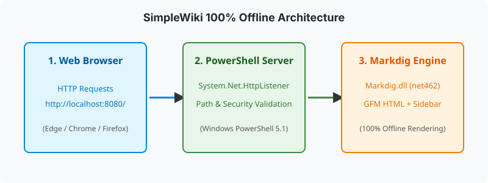

プロジェクト概要
SimpleWiki は、PowerShell 5.1 の System.Net.HttpListener と .NET 用 Markdown レンダラ Markdig を組み合わせた単一ファイル構成のローカル Wiki サーバーです。
開発背景
閉域網環境や機密環境でのドキュメント共有・閲覧において、インターネット接続が必要なブラウザベースのツールや、Node.js / Python 等のランタイムのインストールが制限されるケースに対応するために設計されました。
初めての方は クイックスタートガイド を参照して起動方法を確認できます。
システム構成図

技術スタックと関連ドキュメント
| コンポーネント | 技術仕様 | 関連リンク |
|---|---|---|
| OS | Windows 11 | - |
| ランタイム | Windows PowerShell 5.1 (.NET Framework 4.8) | 環境構築ガイド |
| Web サーバー | System.Net.HttpListener (ローカルポート 8080) |
詳細仕様書（ルーティング） |
| Markdown 変換 | Markdig.dll (.NET Framework 4.6.2 ビルド) |
TOP ページに戻る |
| API仕様 | REST 形式のインターフェース仕様 | REST API 仕様書 |
| 自動テスト | Pester ユニット/統合テスト | 環境構築ガイド |